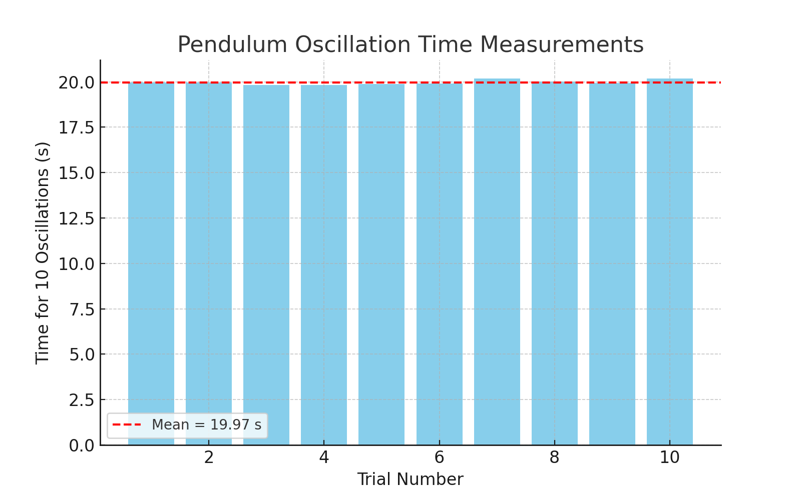

Problem 1
Measuring Earth's Gravitational Acceleration with a Pendulum
📌 Motivation
The acceleration \(g\) due to gravity is a fundamental constant that influences a wide range of physical phenomena. Measuring \(g\) accurately is crucial for understanding gravitational interactions, designing structures, and conducting experiments in various fields. One classic method for determining \(g\) is through the oscillations of a simple pendulum, where the period of oscillation depends on the local gravitational field.
🧪 Task
Measure the acceleration \(g\) due to gravity using a pendulum and in detail analyze the uncertainties in the measurements.
This exercise emphasizes rigorous measurement practices, uncertainty analysis, and their role in experimental physics.
🧰 Procedure
1. Materials
- A string (1 or 1.5 meters long).
- A small weight (e.g., bag of coins, bag of sugar, key chain) mounted on the string.
- Stopwatch (or smartphone timer).
- Ruler or measuring tape.
2. Setup
- Attach the weight to the string and fix the other end to a sturdy support.
- Measure the length of the pendulum, \(L\), from the suspension point to the center of the weight using a ruler or measuring tape.
- Record the resolution of the measuring tool and calculate the uncertainty as:
Let us assume:
3. Data Collection
- Displace the pendulum slightly ( < 15° ) and release it.
- Measure the time for 10 full oscillations (\(T_{10}\)) and repeat this process 10 times.
- The measured values (in seconds):
| Trial | \(T_{10}\) (s) |
|---|---|
| 1 | 20.014 |
| 2 | 19.874 |
| 3 | 19.881 |
| 4 | 20.026 |
| 5 | 20.110 |
| 6 | 19.939 |
| 7 | 20.093 |
| 8 | 19.910 |
| 9 | 19.913 |
| 10 | 19.894 |
- Mean value:
🧮 Calculations
1. Calculate the period
2. Determine \(g\)
3. Propagate uncertainties
🔍 Analysis
1. Compare your measured \(g\) with the standard value:
This is in good agreement with the standard value within experimental uncertainty.
2. Discuss:
- Measurement resolution of 1 cm results in \(\Delta L = 0.005\) m.
- Variability in timing is reflected in the standard deviation \(\sigma_T\).
- Possible error sources: human reaction time, air resistance, small amplitude assumption.
📦 Deliverables
-
Tabulated data:
-
\(L = 1.000 \pm 0.005\) m
- \(\overline{T}_{10} = 19.97\) s, \(\sigma_T = 0.127\) s, \(\Delta T = 0.004\) s
-
\(g = 9.899 \pm 0.063\) m/s²
-
Measurement plot:

- Discussion included in analysis section.